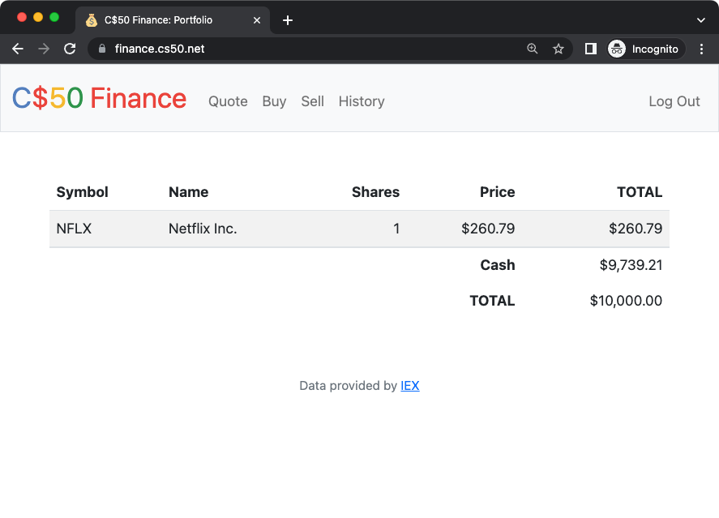

Finance
Implemente um site por meio do qual os usuários possam "comprar" e "vender" ações, como abaixo.

Contexto
Se você não tem certeza do que significa comprar e vender ações (ou seja, ações de uma empresa), vá até aqui para um tutorial.
Você está prestes a implementar o C$50 Finance, um aplicativo da web através do qual você pode gerenciar portfólios de ações. Essa ferramenta não apenas permitirá que você verifique os preços reais das ações e os valores dos portfólios, mas também permitirá que você compre (ok, "compre") e venda (ok, "venda") ações consultando o IEX para obter os preços das ações.
De fato, o IEX permite que você faça o download de cotações de ações por meio de sua API (interface de programação de aplicativos) usando URLs como https://api.iex.cloud/v1/data/core/quote/nflx?token=API_KEY. Observe como o símbolo da Netflix (NFLX) está incorporado neste URL; é assim que o IEX sabe qual dado retornar. Esse link não retornará nenhum dado porque o IEX exige o uso de uma chave de API (mais sobre isso daqui a pouco), mas se retornasse, você veria uma resposta no formato JSON (JavaScript Object Notation) como esta:
{
"avgTotalVolume": 15918066,
"calculationPrice": "close",
"change": -8.27,
"changePercent": -0.03074,
"close": 260.79,
"closeSource": "official",
"closeTime": 1667592000924,
"companyName": "Netflix Inc.",
"currency": "USD",
"delayedPrice": 260.81,
"delayedPriceTime": 1667591988947,
"extendedChange": 0.21,
"extendedChangePercent": 0.00081,
"extendedPrice": 261,
"extendedPriceTime": 1667606392772,
"high": 274.97,
"highSource": "15 minute delayed price",
"highTime": 1667592000831,
"iexAskPrice": None,
"iexAskSize": None,
"iexBidPrice": None,
"iexBidSize": None,
"iexClose": 260.85,
"iexCloseTime": 1667591999754,
"iexLastUpdated": None,
"iexMarketPercent": None,
"iexOpen": 271.67,
"iexOpenTime": 1667568602197,
"iexRealtimePrice": None,
"iexRealtimeSize": None,
"iexVolume": None,
"lastTradeTime": 1667591999820,
"latestPrice": 260.79,
"latestSource": "Close",
"latestTime": "November 4, 2022",
"latestUpdate": 1667592000924,
"latestVolume": 11124694,
"low": 255.32,
"lowSource": "15 minute delayed price",
"lowTime": 1667584872696,
"marketCap": 115215720136,
"oddLotDelayedPrice": 260.81,
"oddLotDelayedPriceTime": 1667591988947,
"open": 271.9,
"openTime": 1667568601785,
"openSource": "official",
"peRatio": 23.39,
"previousClose": 269.06,
"previousVolume": 7057350,
"primaryExchange": "NASDAQ",
"symbol": "NFLX",
"volume": 11124694,
"week52High": 700.99,
"week52Low": 162.71,
"ytdChange": -0.5978504176349512,
"isUSMarketOpen": False
} Observe como, entre as chaves, há uma lista de pares chave-valor separados por vírgula, com dois pontos separando cada chave de seu valor.
Vamos agora direcionar nossa atenção para obter o código de distribuição desse problema!
Começando
Acesse code.cs50.io, clique na janela do seu terminal e execute cd sozinho. Você deve encontrar que o prompt da janela do seu terminal se assemelha ao abaixo:
$Depois execute
wget https://cdn.cs50.net/2022/fall/psets/9/finance.zippara baixar um arquivo ZIP chamado finance.zip para o seu espaço de código.
Em seguida, execute
unzip finance.zippara criar uma pasta chamada finance. Você não precisa mais do arquivo ZIP, então pode executar
rm finance.zipe responda com "y" seguido de Enter no prompt para remover o arquivo ZIP que você baixou.
Agora digite
cd financeseguido de Enter para se mover para dentro (ou seja, abrir) esse diretório. Seu prompt agora deve se parecer com o abaixo.
finance/ $Execute ls sozinho e você deverá ver alguns arquivos e pastas:
app.py finance.db helpers.py requirements.txt static/ templates/Se você encontrar algum problema, siga essas mesmas etapas novamente e veja se consegue determinar onde errou!
Configurando
Antes de começar esta tarefa, será necessário registrar uma chave de API para poder consultar os dados da IEX. Para fazer isso, siga estas etapas:
- Acesse iexcloud.io/cloud-login#/register/.
- Selecione o tipo de conta "Individual", em seguida, insira seu nome, endereço de e-mail e uma senha e clique em "Criar conta".
- Após o registro, role a página para baixo até "Comece gratuitamente" e clique em "Selecionar plano de início" para escolher o plano gratuito. Observe que este plano só funciona por 30 dias a partir do dia em que você cria sua conta. Tenha isso em mente se você pretende usar esta mesma API para seu projeto final!
- Depois de confirmar sua conta por meio de um e-mail de confirmação, acesse https://iexcloud.io/console/tokens.
- Copie a chave que aparece na coluna Token (ela deve começar com
pk_). - Na janela do terminal, execute:
$ export API_KEY=valueonde value é esse valor (colado), sem nenhum espaço imediatamente antes ou depois do =. Você também pode desejar colar esse valor em um documento de texto em algum lugar, caso precise dele novamente mais tarde.
Executando
Inicie o servidor web integrado do Flask (dentro de finance/):
$ flask run Visite a URL gerada pelo flask para ver o código de distribuição em ação. No entanto, você ainda não poderá fazer login ou se registrar!
Dentro de finance/, execute sqlite3 finance.db para abrir o finance.db com o sqlite3. Se você executar .schema no prompt do SQLite, observe como o finance.db vem com uma tabela chamada users. Dê uma olhada em sua estrutura (ou seja, esquema). Observe como, por padrão, novos usuários receberão $10.000 em dinheiro. Mas se você executar SELECT * FROM users;, ainda não haverá nenhum usuário (ou seja, linhas) para navegar.
Outra maneira de visualizar o finance.db é com um programa chamado phpLiteAdmin. Clique em finance.db no navegador de arquivos do seu espaço de códigos e, em seguida, clique no link mostrado abaixo do texto "Por favor, visite o seguinte link para autorizar a Visualização do GitHub". Você verá informações sobre o próprio banco de dados, bem como uma tabela, users, assim como você viu no prompt do sqlite3 com .schema.
Entendendo
app.py
Abra o arquivo app.py. No início do arquivo estão várias importações, incluindo o módulo SQL do CS50 e algumas funções auxiliares. Mais sobre elas em breve.
Após configurar o Flask, observe como este arquivo desativa o cache das respostas (desde que você esteja no modo de depuração, que é o padrão no seu espaço de códigos do code50), para que você possa fazer alterações em algum arquivo sem que o seu navegador perceba. Em seguida, observe como ele configura o Jinja com um "filtro" personalizado, usd, uma função (definida em helpers.py) que facilitará a formatação de valores em dólares americanos (USD). Em seguida, ele configura o Flask para armazenar sessões no sistema de arquivos local (ou seja, disco) em vez de armazená-las dentro de cookies (assinados digitalmente), que é o padrão do Flask. O arquivo então configura o módulo SQL do CS50 para usar o finance.db.
A seguir, há uma série de rotas, das quais apenas duas estão completamente implementadas: login e logout. Leia a implementação do login primeiro. Observe como ele usa db.execute (da biblioteca CS50) para consultar finance.db. E observe como ele usa check_password_hash para comparar hashes das senhas dos usuários. Observe também como o login "lembra" que um usuário está logado armazenando o user_id dele ou dela, um INTEIRO, na session. Dessa forma, qualquer uma das rotas deste arquivo pode verificar qual usuário, se houver algum, está logado. Por fim, observe como, uma vez que o usuário fez login com sucesso, o login será redirecionado para "/", levando o usuário para sua página inicial. Enquanto isso, observe como o logout simplesmente limpa a session, efetivamente fazendo logout de um usuário.
Observe que a maioria das rotas é "decorada" com @login_required (uma função definida em helpers.py também). Esse decorador garante que, se um usuário tentar visitar qualquer uma dessas rotas, ele ou ela será redirecionado primeiro para login para fazer login.
Observe também como a maioria das rotas suporta GET e POST. Mesmo assim, a maioria delas (por enquanto!) simplesmente retorna um "pedido de desculpas", já que ainda não foram implementadas.
helpers.py
Em seguida, dê uma olhada no arquivo helpers.py. Ah, lá está a implementação de apology. Observe como ela, em última instância, renderiza um modelo, apology.html. Além disso, ela também define dentro de si mesma outra função, escape, que é usada simplesmente para substituir caracteres especiais em desculpas. Ao definir escape dentro de apology, limitamos a função anterior somente a esta última; nenhuma outra função será capaz (ou precisará) chamá-la.
Em seguida, no arquivo, temos login_required. Não se preocupe se este parecer um pouco confuso, mas se você já se perguntou como uma função pode retornar outra função, aqui está um exemplo!
Em seguida, temos lookup, uma função que, dado um symbol (por exemplo, NFLX), retorna uma cotação de ações de uma empresa na forma de um dicionário (dict) com três chaves: name, cujo valor é uma str, o nome da empresa; price, cujo valor é um float; e symbol, cujo valor é uma str, uma versão canônica (maiúscula) do símbolo de uma ação, independentemente de como esse símbolo foi capitalizado ao ser passado para a função lookup.
Por último, no arquivo, temos usd, uma função curta que simplesmente formata um número em formato de dólar (por exemplo, 1234.56 é formatado como $1,234.56).
requirements.txt
Em seguida, dê uma olhada rápida no arquivo requirements.txt. Esse arquivo simplesmente especifica os pacotes nos quais este aplicativo dependerá.
static/
Dê uma olhada também em static/, dentro do qual está styles.css. É onde reside parte do CSS inicial. Você pode modificá-lo conforme necessário.
templates/
Agora procure em templates/. Em login.html, basicamente, há apenas um formulário HTML estilizado com o Bootstrap. Em apology.html, por outro lado, há um modelo de desculpas. Lembre-se de que a função apology em helpers.py recebia dois argumentos: message, que foi passado para render_template como o valor de bottom, e, opcionalmente, code, que foi passado para render_template como o valor de top. Observe em apology.html como esses valores são usados! E aqui está o motivo 0:-)
Por último, temos layout.html. Ele é um pouco maior do que o usual, mas isso se deve principalmente ao fato de que ele vem com uma "navbar" (barra de navegação) sofisticada e compatível com dispositivos móveis, também baseada no Bootstrap. Observe como ele define um bloco, main, no qual os modelos (incluindo apology.html e login.html) serão inseridos. Ele também inclui suporte para o message flashing do Flask, para que você possa transmitir mensagens de uma rota para outra, para que o usuário possa vê-las.
Especificação
register
Complete a implementação do register de forma que permita que um usuário se registre para uma conta por meio de um formulário.
- Exija que o usuário insira um nome de usuário, implementado como um campo de texto cujo
nameéusername. Mostre uma mensagem de desculpas se a entrada do usuário estiver em branco ou se o nome de usuário já existir. - Exija que o usuário insira uma senha, implementada como um campo de texto cujo
nameépassword, e depois a mesma senha novamente, implementada como um campo de texto cujonameéconfirmation. Mostre uma mensagem de desculpas se qualquer uma das entradas estiver em branco ou se as senhas não corresponderem. - Envie a entrada do usuário via
POSTpara/register. INSIRAo novo usuário emusers, armazenando um hash da senha do usuário, não a própria senha. Faça o hash da senha do usuário comgenerate_password_hash. Provavelmente você vai querer criar um novo modelo (por exemplo,register.html) que seja bastante semelhante alogin.html.
Depois de implementar corretamente o register, você deverá ser capaz de se registrar para uma conta e fazer login (já que o login e o logout já funcionam)! E você deverá ser capaz de ver suas linhas via phpLiteAdmin ou sqlite3.
quote
Complete a implementação de quote de forma que permita ao usuário consultar o preço atual de uma ação.
- Exija que o usuário insira o símbolo da ação, implementado como um campo de texto cujo
nameésymbol. - Envie a entrada do usuário via
POSTpara/quote. - Provavelmente você desejará criar dois novos modelos (por exemplo,
quote.htmlequoted.html). Quando um usuário visitar/quotevia GET, renderize um desses modelos, no qual deve haver um formulário HTML que envia para/quotevia POST. Em resposta a um POST,quotepode renderizar esse segundo modelo, incorporando um ou mais valores delookup.
buy
Complete a implementação de buy de tal forma que permita que um usuário compre ações.
- Exija que o usuário insira o símbolo de uma ação, implementado como um campo de texto cujo
nameésymbol. Renderize um pedido de desculpas se a entrada estiver em branco ou se o símbolo não existir (conforme o valor de retorno delookup). - Exija que o usuário insira a quantidade de ações, implementado como um campo de texto cujo
nameéshares. Renderize um pedido de desculpas se a entrada não for um número inteiro positivo. - Envie a entrada do usuário via
POSTpara/buy. - Após a conclusão, redirecione o usuário para a página inicial.
- Provavelmente você desejará chamar
lookuppara verificar o preço atual de uma ação. - Provavelmente você desejará
SELECTquanto dinheiro o usuário possui atualmente emusers. - Adicione uma ou mais novas tabelas ao
finance.dbpara acompanhar a compra. Armazene informações suficientes para saber quem comprou o quê, a que preço e quando.- Use os tipos apropriados do SQLite.
- Defina índices
UNIQUEnos campos que devem ser únicos. - Defina índices (não
UNIQUE) nos campos pelos quais você pesquisará (por exemplo, usandoSELECTcomWHERE).
- Exiba um pedido de desculpas, sem concluir uma compra, se o usuário não puder pagar pelo número de ações no preço atual.
- Você não precisa se preocupar com condições de corrida (ou usar transações).
Depois de implementar o buy corretamente, você deve ser capaz de ver as compras dos usuários em suas novas tabelas por meio do phpLiteAdmin ou do sqlite3.
index
Complete a implementação do index de tal maneira que ele exiba uma tabela HTML resumindo, para o usuário atualmente logado, quais ações o usuário possui, a quantidade de ações possuídas, o preço atual de cada ação e o valor total de cada posição (ou seja, ações multiplicado pelo preço). Além disso, exiba o saldo atual em dinheiro do usuário juntamente com um total geral (ou seja, valor total das ações mais dinheiro).
- Provavelmente você vai querer executar várias consultas
SELECT. Dependendo de como você implementar sua(s) tabela(s), você pode achar úteis as cláusulas GROUP BY, HAVING, SUM e/ou WHERE. - Provavelmente você vai querer chamar
lookuppara cada ação.
sell
Complete a implementação de sell de forma que permita ao usuário vender ações de uma ação (que ele ou ela possui).
- Exigir que o usuário insira o símbolo de uma ação, implementado como um menu
selectcujonameésymbol. Exibir uma mensagem de desculpas se o usuário não selecionar uma ação ou se (de alguma forma, após o envio) o usuário não possuir nenhuma ação dessa ação. - Exigir que o usuário insira um número de ações, implementado como um campo de texto cujo
nameéshares. Exibir uma mensagem de desculpas se a entrada não for um número inteiro positivo ou se o usuário não possuir essa quantidade de ações da ação. - Enviar a entrada do usuário via
POSTpara/sell. - Após a conclusão, redirecionar o usuário para a página inicial.
- Você não precisa se preocupar com condições de corrida (ou usar transações).
history
Complete a implementação do history de forma que exiba uma tabela HTML resumindo todas as transações do usuário, listando linha por linha cada compra e venda.
- Para cada linha, deixe claro se uma ação foi comprada ou vendida, incluindo o símbolo da ação, o preço (de compra ou venda), a quantidade de ações compradas ou vendidas, e a data e hora em que a transação ocorreu.
- Você pode precisar alterar a tabela criada para
buyou complementá-la com uma tabela adicional. Tente minimizar redundâncias.
toque pessoal
Implemente pelo menos um toque pessoal de sua escolha:
- Permitir que os usuários alterem suas senhas.
- Permitir que os usuários adicionem dinheiro adicional à sua conta.
- Permitir que os usuários comprem mais ações ou vendam ações que já possuem através do
indexem si, sem precisar digitar manualmente os símbolos das ações. - Exigir que as senhas dos usuários contenham um certo número de letras, números e/ou símbolos.
- Implementar algum outro recurso de escopo comparável.
Testando
Certifique-se de testar manualmente seu aplicativo da web, realizando as seguintes ações:
- registrando um novo usuário e verificando se a página do portfólio carrega com as informações corretas,
- solicitando uma cotação usando um símbolo de ação válido,
- comprando uma ação várias vezes e verificando se o portfólio exibe os totais corretos,
- vendendo todas ou algumas ações e verificando novamente o portfólio, e
- verificando se a página de histórico exibe todas as transações para o usuário logado.
Também teste alguns usos inesperados, como:
- inserindo strings alfabéticas em campos onde apenas números são esperados,
- inserindo números zero ou negativos em campos onde apenas números positivos são esperados,
- inserindo valores de ponto flutuante em campos onde apenas números inteiros são esperados,
- tentando gastar mais dinheiro do que um usuário possui,
- tentando vender mais ações do que um usuário possui,
- inserindo um símbolo de ação inválido,
- incluindo caracteres potencialmente perigosos como
'e;em consultas SQL.
Depois de ficar satisfeito, para testar seu código com check50, execute o código abaixo.
check50 cs50/problems/2023/x/financeTenha em mente que o check50 irá testar todo o seu programa como um todo. Se você executá-lo antes de completar todas as funções necessárias, pode reportar erros em funções que estão realmente corretas, mas dependem de outras funções.
Execute o seguinte para avaliar o estilo de seus arquivos Python usando o style50.
style50 *.pySolução da equipe
Você está livre para estilizar seu próprio aplicativo de forma diferente, mas aqui está como a solução da equipe se parece!
Sinta-se à vontade para se cadastrar em uma conta e explorar. Não use uma senha que você utiliza em outros sites.
É razoável olhar o HTML e CSS da equipe.
Dicas
- Para formatar um valor como um valor de dólar dos EUA (com centavos listados com duas casas decimais), você pode usar o filtro
usdem seus modelos Jinja (imprimindo valores como{{ value | usd }}em vez de{{ value }}). -
Dentro de
cs50.SQLhá um métodoexecutecujo primeiro argumento deve ser umastrde SQL. Se essastrcontiver parâmetros de ponto de interrogação aos quais os valores devem ser vinculados, esses valores podem ser fornecidos como parâmetros nomeados adicionais paraexecute. Veja a implementação delogincomo exemplo. O valor de retorno deexecuteé o seguinte:- Se
strfor umSELECT, entãoexecuteretorna umalistde zero ou mais objetosdict, nos quais estão as chaves e valores que representam os campos e células de uma tabela, respectivamente. - Se
strfor umINSERT, e a tabela na qual os dados foram inseridos contiver umaPRIMARY KEYautoincrementável, entãoexecuteretorna o valor da chave primária da nova linha inserida. - Se
strfor umDELETEou umUPDATE, entãoexecuteretorna o número de linhas excluídas ou atualizadas porstr.
- Se
- Lembre-se de que o
cs50.SQLirá registrar em sua janela do terminal todas as consultas que você executar por meio doexecute(para que você possa confirmar se estão como o esperado). - Certifique-se de usar parâmetros vinculados a ponto de interrogação (ou seja, um paramstyle de
named) ao chamar o métodoexecutedo CS50, comoWHERE ?. Não use f-strings,formatou+(ou seja, concatenação), caso contrário, você corre o risco de sofrer um ataque de injeção de SQL. - Se você já estiver familiarizado com SQL, poderá usar o SQLAlchemy Core ou o Flask-SQLAlchemy (ou seja, SQLAlchemy ORM) em vez do
cs50.SQL. - Você pode adicionar arquivos estáticos adicionais em
static/. - Provavelmente você vai querer consultar a documentação do Jinja ao implementar seus modelos.
- É razoável pedir a outras pessoas para experimentar (e tentar provocar erros em) seu site.
- Você pode alterar a estética dos sites, através de:
- Você pode encontrar a documentação do Flask e a documentação do Jinja úteis!
FAQs
ImportError: No module named 'application'
Por padrão, o flask procura por um arquivo chamado app.py no diretório de trabalho atual (porque configuramos o valor de FLASK_APP, uma variável de ambiente, para ser app.py). Se você está vendo esse erro, provavelmente está executando o flask no diretório errado!
OSError: [Errno 98] Address already in use
Se, ao executar o flask, você ver esse erro, provavelmente o flask está sendo executado em outra aba. Certifique-se de encerrar aquele outro processo, com ctrl-c, antes de iniciar o flask novamente. Se você não tem nenhuma outra aba aberta, execute fuser -k 8080/tcp para encerrar quaisquer processos que ainda estejam escutando na porta TCP 8080.
Como enviar
No seu terminal, execute o comando abaixo para enviar o seu trabalho.
submit50 cs50/problems/2023/x/finance